Rezultatele Execuției și Testarea Algoritmilor
Fiecare panou de mai jos conține datele de test utilizate și imaginea consolei rezultate în urma rulării.
M1.7 - Consolă
Ecuația Bazei de Numerație
Date utilizate: a = 160, b = 112 -> Rezultat așteptat: x = 8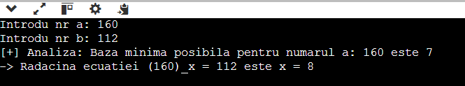
M2.11 - Fișiere
Gestiune Stații Rapid-Bus
Conținut în date.in:10 60
100 50 25 25 50 10 10 80 20
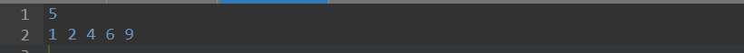
M3.11 - Consolă
Partițiile unui Număr Natural
Date utilizate: n = 4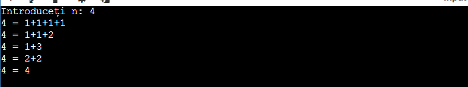
M3.29 - Consolă
Canibalii și Misionarii
Date introduse recursiv în starea inițială a stivei.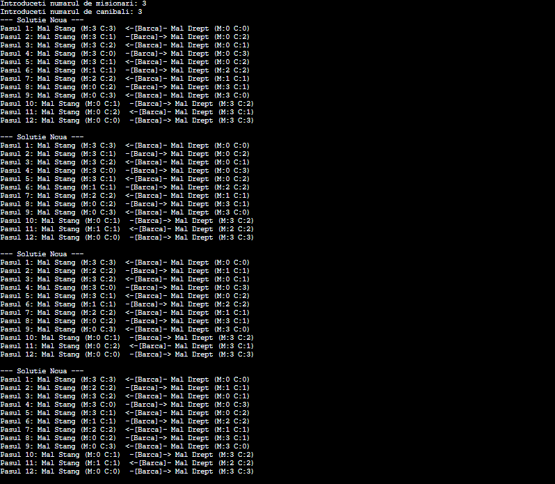
M4.11 - Consolă
Generarea Permutărilor
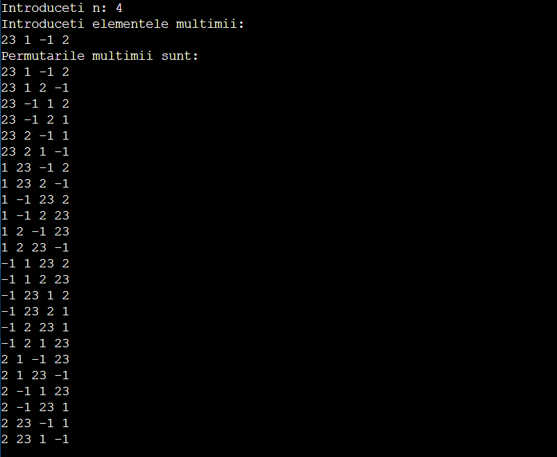
M5.15 - Consolă
Suma Elementelor (Divide et Impera)
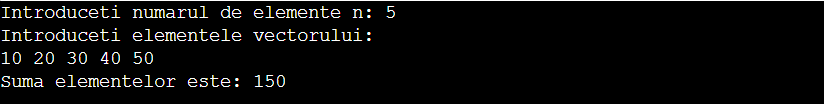
M6.11 - Consolă
Suma Maximă în Triunghi
Date utilizate: n = 4, Triunghi: 2 / 3 5 / 6 3 4 / 5 6 1 4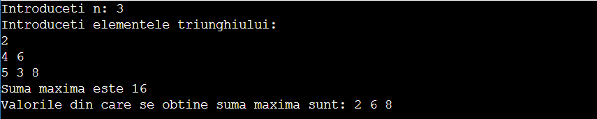
M6.16 - Consolă
Subșir Crescător Maximal
Date utilizate: 9 numere -> 4 2 3 0 5 2 6 9 8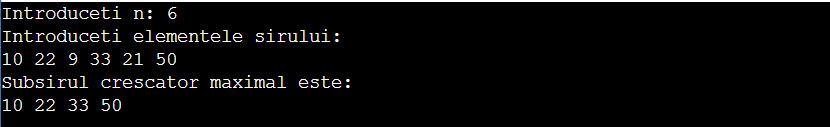
Problema 8 - C# .NET
Evaluare Studenți și Gestiune Decanat
Execuție interfață consolă OOP. Obiecte: Student, GestiuneStudenti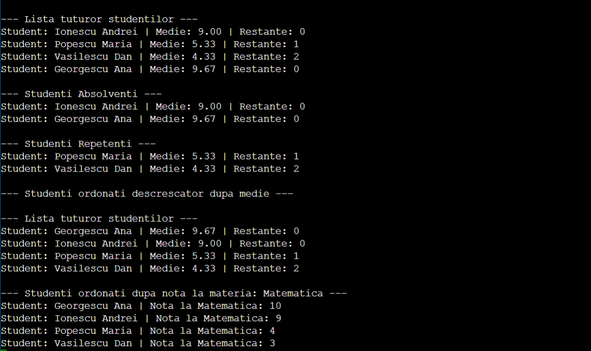
POO - C++
Gestiunea Parcului Auto (QuickDelivery)
Polimorfism Dinamic & Liste înlănțuiteImplementarea unei structuri polimorfice pentru gestionarea vehiculelor și calculul consumului total.
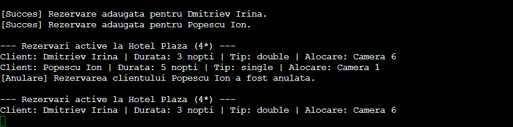
Suplimentar
Extensibilitate: Principiul Open-Closed
Arhitectură bazată pe ierarhii de claseStudiu privind adăugarea de noi tipuri de date în sistem fără modificarea logicii de gestionare existente.
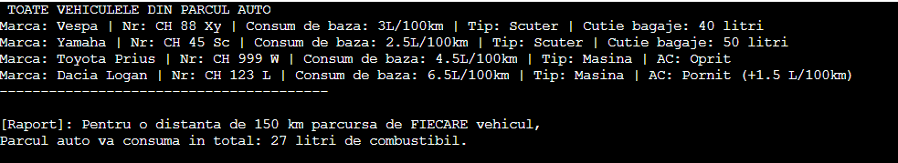